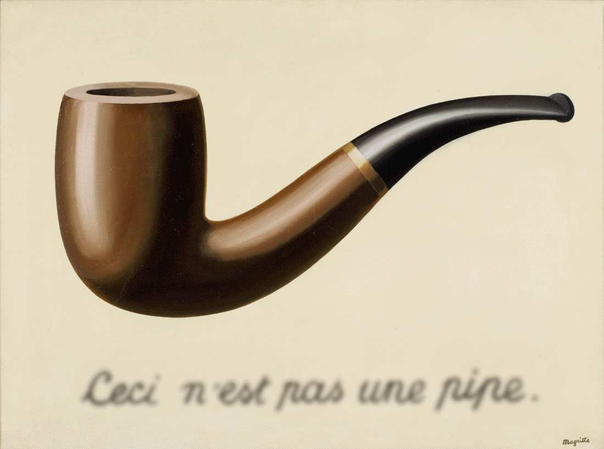

1. The blank signature
| FICHA TÉCNICA | |
|---|---|
| Onde ver: | National Gallery of Art |
| Ano: | 1965 |
| Técnica: | Óleo sobre Tela |
Esta pintura utiliza uma técnica como a do garfo de Schuster e ilustra como a mente constrói a impossibilidade. A mente reúne os elementos separados em um todo "coerente" dessas partes. O cavalo é assim dividido por um pedaço de grama de fundo. Além disso, um dos troncos das árvores fica na frente do cavalo, mas sua base fica atrás do cavalo. Certamente parece que esses elementos são inconsistentes com a nossa concepção de um piloto em uma floresta. Por exemplo, ele se qualifica como uma ilusão de oclusão, já que a reversão das oclusões é suficiente para produzir uma imagem consistente.
2. A traição das Imagens
| FICHA TÉCNICA | |
|---|---|
| Onde ver: | Museu de Arte do Condado de Los Angeles |
| Ano: | 1929 |
| Técnica: | Óleo sobre Tela |
Considerado um ícone da arte moderna a obra faz parte de uma série, na qual a imagem realista é acompanhada pela inscrição Ceci n'est pas une pipe, que em português significa Isto não é um cachimbo. A Traição das Imagens desafia a convenção linguística de identificar uma imagem de algo como a coisa em si. A princípio, o ponto de Magritte aparece simplista, quase ao ponto de uma provocação: "Uma pintura de um cachimbo não é um cachimbo". Na verdade, este trabalho é extremamente paradoxal. O seu estilo realista e o subtítulo remete para um anúncio publicitário, uma área em que Magritte teria trabalhado
3. O Filho do Homem
| FICHA TÉCNICA | |
|---|---|
| Onde ver: | Museu Magritte |
| Ano: | 1964 |
| Técnica: | Óleo sobre Tela |
Magritte pintou essa obra como um autorretrato. A pintura mostra um homem em um sobretudo e um chapéu coco,
em frente a uma mureta, e atrás dela, o mar e um céu nublado. O rosto do homem está em grande parte escondido
por uma maçã verde pairando no ar. No entanto, os olhos do homem podem ser vistos, espreitando sobre a maçã.
Outra característica sutil é o braço esquerdo do homem, que parece dobrar para trás, na altura do cotovelo.
Sobre a pintura, Magritte afirmou:
"Pelo menos ela esconde o rosto parcialmente bem, assim que você tem a face aparente, a maçã, escondendo o visível mas oculto,
o rosto da pessoa. É algo que acontece constantemente. Tudo que nós vemos esconde outra coisa, nós sempre queremos ver
o que está escondido pelo o que nós vemos. Há um interesse naquilo que está escondido e no que o visível não nos mostra.
Esse interesse pode tomar a forma de um sentimento relativamente intenso, um tipo de conflito, pode-se dizer, entre o
visível que está escondido e o visível que está presente."
4. The Castle of The Pyrenees
| FICHA TÉCNICA | |
|---|---|
| Onde ver: | Israel Museum, Jerusalem, Israel |
| Ano: | 1959 |
| Técnica: | Óleo sobre Tela |
O Castelo dos Pirineus tornou-se uma das imagens mais conhecidas e reproduzidas de Magritte. Ele incorpora a típica justaposição perturbadora de objetos familiares do artista, combinada com poesia e mistério cativantes.
5. Golconda

| FICHA TÉCNICA | |
|---|---|
| Onde ver: | The Menil Collection, Houston, Texas |
| Ano: | 1953 |
| Técnica: | Óleo sobre Tela |
A tela retrata uma cena de homens quase idênticos, vestidos com sobretudos e chapéus-coco, que parecem gotas de chuva forte (ou estar flutuando como balões de hélio, embora não haja nenhuma indicação real de movimento), contra um pano de fundo de edifícios e céu azul. Os homens estão espaçados em rede e em camadas. Magritte morou em um ambiente suburbano semelhante em Bruxelas, e vestia-se de forma semelhante. O chapéu-coco era uma característica comum de muitos de seus trabalhos, e aparece em pinturas como “O Filho do Homem”.
6. The false mirror
| FICHA TÉCNICA | |
|---|---|
| Onde ver: | Museu de Arte Moderna de Nova York |
| Ano: | 1928 |
| Técnica: | Óleo sobre Tela |
The False Mirror é uma pintura de um olho grande, sem piscar, sem cílios presentes. Uma grande pupila negra está localizada no centro. A íris é pintada para representar um céu azul brilhante com nuvens brancas flutuantes e fofas. A emoção que instantaneamente vem à mente quando se observa The False Mirror, é de admiração e medo, já que esta é a emoção representada nesta forma de pintura surrealista.
7. La mémoire

| FICHA TÉCNICA | |
|---|---|
| Onde ver: | - |
| Ano: | 1948 |
| Técnica: | Óleo sobre Tela |
Magritte sobre a pintura: "... A imagem é a ilustração das seguintes idéias: quando pronunciamos a palavra memória, vemos que ela corresponde à imagem de uma cabeça humana. Se a memória pode ocupar um lugar na espaço, só pode estar dentro da cabeça, então a mancha de sangue pode despertar em nós a suposição de que a pessoa cujo rosto estamos vendo foi vítima de um acidente fatal. atos de um acontecimento do passado, que permanece presente em nossa mente graças à memória "